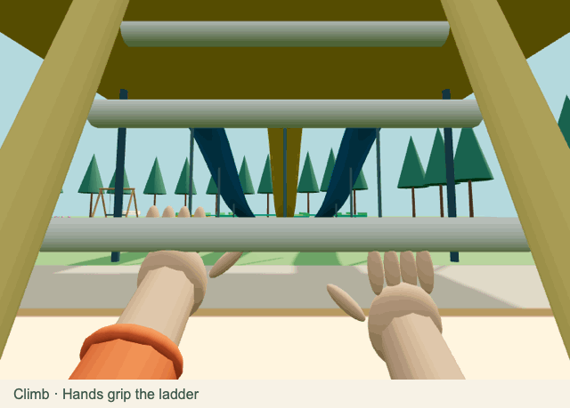

Tag, through your character’s eyes
Climb the ladders, put your hands up on the slides, and explore floating obstacles and forest towers.

Animated preview hidden to respect your reduced-motion setting. You can choose to open the animation.

In Tag, choose 3D · Your character’s eyes before starting. Move with WASD, drag to look, press Space to jump, and hold E to climb or use the swing. On a phone, hold and drag the left side to move and drag the right side to look; use the Jump and Climb / use buttons.